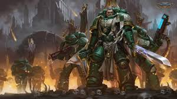

Xeno scum purged
Master Lazarus
May 5th
Purged some alien today with my brothers. Feels good to heave our glorious Primarch the Lion back. For the Emperor!
A blog for all battle-brothers to post about their victories for the glory of the Imperimum and the God-Emperor. Available on all cogitators throughout our glorious Imperium of Men
Purged some alien today with my brothers. Feels good to heave our glorious Primarch the Lion back. For the Emperor!
Fortified some walls on Armageddon, Dorn would be proud of our work. For the Imperium!
Forged great weapons today to help the Imperium fight back its enemeies. For the Imperium!
A daily reminder for all brothers to suffer not the alien, the mutant, the heretic to live. For the Emperor!
Ultramarines cooked the best soups in the Imperium. I, Cato Sicarius, served it to out Primarch personally. For the God-Emperor!